Lecture 27
Raster Modification
Core Raster Principles
1. Extent
When dealing with raster data, the extent is a fondational component of the raster data structure
- That is, we need to know the area the raster is covering!
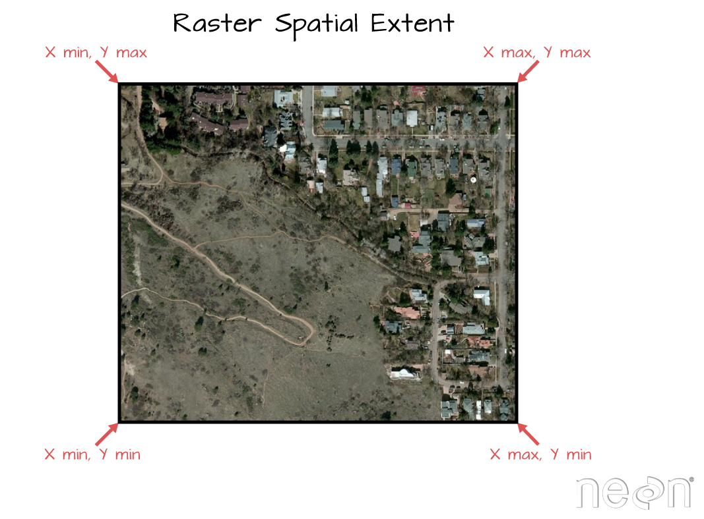
Image Source: National Ecological Observatory Network (NEON)
2. Discretization
Once we know the extent, we need to know how that space is split up
Two complimentary bit of information can tell us this:
- Resolution (res)
- Number of row and number of columns (nrow/ncol)
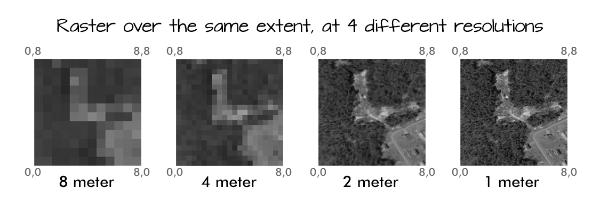
Image Source: National Ecological Observatory Network (NEON)
3. CRS
The Coordinate Reference System (CRS) is a system that uses coordinate values to represent the location of points in space
The CRS is a critical component of the raster data structure
Values
- The values of the raster are the data that is stored in the raster cells
- They are represented by an vector of data that can be unfolded according to the row/column/layer structure in the header - just like how R can fold an array into a matrix or array
So,
A raster is made of an extent, and a resolution / row-column structure
A vector of values fill that structure (same way a vector in R can have diminisons)
- These values are often scaled to integers to reduce file size
Values are referenced in cartisian space, based on cell index
A CRS along with the extent, can provide spatial reference / coordinates
General Process
Almost all remote sensing / image analysis begins with the same basic steps:
Identifying an area of interest (AOI)
Identifying and downloading the relevant images or products
Analyzing the raster products
The definition of a AOI is critical because raster data in continuous, therefore we need to define the bounds of the study rather then the bounds of the objects
- But, objects often (even typically) define our bounds
Find elevation data for Fort Collins:
- Define the AOI
- Read data from elevation map tiles, for a specific zoom, and crop to the AOI
- The resulting raster …
(elev = rast("data/foco-elev.tif"))
#> class : SpatRaster
#> dimensions : 725, 572, 1 (nrow, ncol, nlyr)
#> resolution : 30, 30 (x, y)
#> extent : -769695, -752535, 1978485, 2000235 (xmin, xmax, ymin, ymax)
#> coord. ref. : +proj=aea +lat_0=23 +lon_0=-96 +lat_1=29.5 +lat_2=45.5 +x_0=0 +y_0=0 +datum=NAD83 +units=m +no_defs
#> source : foco-elev.tif
#> name : dem
#> min value : 146730
#> max value : 197781
Raster Values
elev
#> class : SpatRaster
#> dimensions : 725, 572, 1 (nrow, ncol, nlyr)
#> resolution : 30, 30 (x, y)
#> extent : -769695, -752535, 1978485, 2000235 (xmin, xmax, ymin, ymax)
#> coord. ref. : +proj=aea +lat_0=23 +lon_0=-96 +lat_1=29.5 +lat_2=45.5 +x_0=0 +y_0=0 +datum=NAD83 +units=m +no_defs
#> source : foco-elev.tif
#> name : dem
#> min value : 146730
#> max value : 197781Raster Values
# The length of the vector is equal to the rows * columns
length(v) == nrow(elev) * ncol(elev)
#> [1] TRUE
# The span of the x extent divided by the resolution equals the raster rows
((xmax(elev) - xmin(elev)) / res(elev)[1]) == ncol(elev)
#> [1] TRUE
# The span of the x extent divided by the number of rows equals the raster resolution
((xmax(elev) - xmin(elev)) / ncol(elev)) == res(elev)[1]
#> [1] TRUEAll image files are the same!
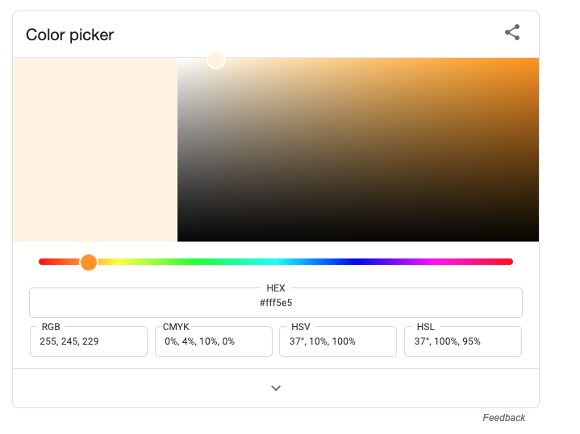
Google Color Picker
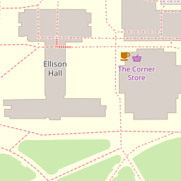
Raster Algebra
So our raster data is stored as a large numeric array/vector
Many generic functions allow for simple algebra on Raster objects,
These include:
normal algebraic operators such as
+,-,*,/logical operators such as
>,>=,<,==,!functions like
abs,round,ceiling,floor,trunc,sqrt,log,log10,exp,cos,sin,atan,tan,max,min,range,prod,sum,any,all
Raster Algebra
In these functions you can mix
SpatRastobjects with numbers, as long as the first argument is a raster object.That means you can add 100 to a raster object but not a raster object to 100
For example:
elev + 100
#> class : SpatRaster
#> dimensions : 725, 572, 1 (nrow, ncol, nlyr)
#> resolution : 30, 30 (x, y)
#> extent : -769695, -752535, 1978485, 2000235 (xmin, xmax, ymin, ymax)
#> coord. ref. : +proj=aea +lat_0=23 +lon_0=-96 +lat_1=29.5 +lat_2=45.5 +x_0=0 +y_0=0 +datum=NAD83 +units=m +no_defs
#> source(s) : memory
#> varname : foco-elev
#> name : dem
#> min value : 146830
#> max value : 197881
log10(elev)
#> class : SpatRaster
#> dimensions : 725, 572, 1 (nrow, ncol, nlyr)
#> resolution : 30, 30 (x, y)
#> extent : -769695, -752535, 1978485, 2000235 (xmin, xmax, ymin, ymax)
#> coord. ref. : +proj=aea +lat_0=23 +lon_0=-96 +lat_1=29.5 +lat_2=45.5 +x_0=0 +y_0=0 +datum=NAD83 +units=m +no_defs
#> source(s) : memory
#> varname : foco-elev
#> name : dem
#> min value : 5.166519
#> max value : 5.296185Replacement
- Raster values can be replaced on a conditional statements
- Doing this changes the underlying data!
- If you want to retain the original data, you must make a copy of the base layer
Modifying a raster
When we want to modify the extent of a raster we can clip it to a new bounds
crop: lets you reduce the extent of a raster to the extent of another, overlapping object:

Modifying the underlying data:
mask: mask takes an input object (sf or SpatRast) and set anything not undelying the input to a new value (default = NA)
library(osmdata)
#> Data (c) OpenStreetMap contributors, ODbL 1.0. https://www.openstreetmap.org/copyright
osm = osmdata::opq(st_bbox(st_transform(fc,4326))) |>
add_osm_feature("water") |>
osmdata_sf()
(poly = osm$osm_polygons |>
st_transform(crs(elev)))
#> Simple feature collection with 181 features and 17 fields
#> Geometry type: POLYGON
#> Dimension: XY
#> Bounding box: xmin: -769181 ymin: 1977155 xmax: -753314.8 ymax: 2000444
#> Projected CRS: unnamed
#> First 10 features:
#> osm_id name alt_name area basin boat
#> 6051656 6051656 <NA> <NA> <NA> <NA> <NA>
#> 23598705 23598705 Lee Lake <NA> <NA> <NA> <NA>
#> 23598868 23598868 <NA> <NA> <NA> <NA> <NA>
#> 23598945 23598945 College Lake <NA> <NA> <NA> <NA>
#> 23599224 23599224 Warren Lake <NA> <NA> <NA> <NA>
#> 23599227 23599227 Harmony Reservoir <NA> <NA> <NA> <NA>
#> 23599320 23599320 <NA> <NA> <NA> <NA> <NA>
#> 23599327 23599327 <NA> <NA> <NA> <NA> <NA>
#> 44074911 44074911 Lake Sherwood Nelson Reservoir <NA> <NA> <NA>
#> 47471957 47471957 <NA> <NA> <NA> <NA> <NA>
#> description ele gnis:feature_id intermittent landuse layer natural
#> 6051656 <NA> <NA> <NA> <NA> <NA> <NA> <NA>
#> 23598705 <NA> <NA> <NA> <NA> <NA> <NA> water
#> 23598868 <NA> <NA> <NA> <NA> <NA> <NA> <NA>
#> 23598945 <NA> <NA> <NA> <NA> <NA> <NA> water
#> 23599224 <NA> <NA> <NA> <NA> <NA> <NA> water
#> 23599227 <NA> <NA> <NA> <NA> <NA> <NA> water
#> 23599320 <NA> <NA> <NA> <NA> <NA> <NA> water
#> 23599327 <NA> <NA> <NA> <NA> <NA> <NA> water
#> 44074911 <NA> 1512 201223 <NA> <NA> <NA> water
#> 47471957 <NA> <NA> <NA> <NA> <NA> <NA> water
#> place salt source water geometry
#> 6051656 <NA> <NA> <NA> <NA> POLYGON ((-762901.7 1988981...
#> 23598705 <NA> <NA> <NA> lake POLYGON ((-765209.9 1991246...
#> 23598868 <NA> <NA> <NA> <NA> POLYGON ((-767955.5 1985345...
#> 23598945 <NA> <NA> <NA> lake POLYGON ((-766871.6 1989267...
#> 23599224 <NA> <NA> <NA> reservoir POLYGON ((-760465.5 1983486...
#> 23599227 <NA> <NA> <NA> reservoir POLYGON ((-760046.6 1982348...
#> 23599320 <NA> <NA> <NA> pond POLYGON ((-762458.2 1991222...
#> 23599327 <NA> <NA> <NA> pond POLYGON ((-763462.8 1992438...
#> 44074911 <NA> <NA> <NA> reservoir POLYGON ((-758628.3 1984729...
#> 47471957 <NA> <NA> <NA> reservoir POLYGON ((-764440.4 1992962...What is mask doing?
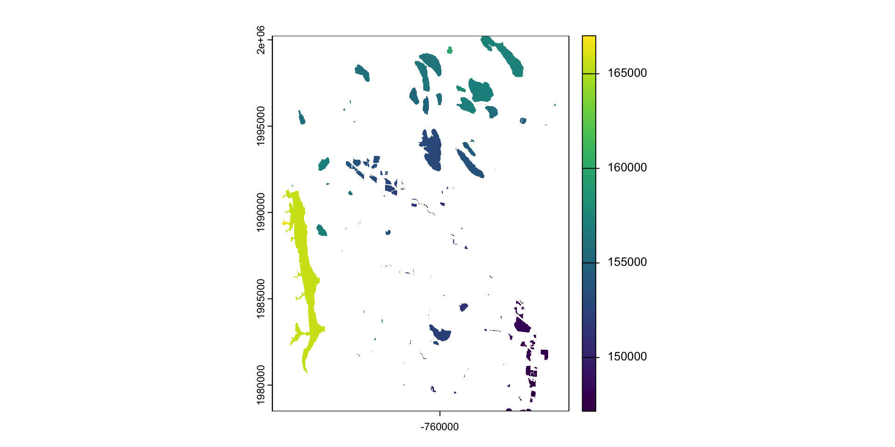
Crop or/and mask
- Crop is more efficient then mask
- Often you will want to mask and crop a raster
- The correct way to do this is crop then mask
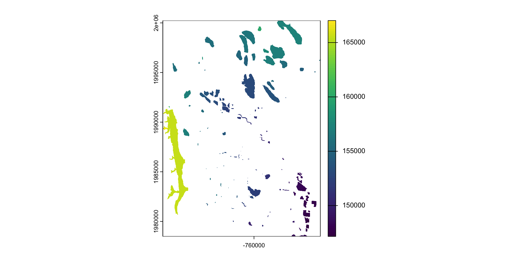
Aggregate and disaggregate
aggregateanddisaggregateallow for changing the resolution of a Raster object.This is similar to the zoom scaling on a web map except the scale factor is not set to 2
For aggregate, you need to specify a function determining what to do with the grouped cell values (default = mean).
app
Just like a vector, we can apply functions over a raster with
appThese types of formulas are very useful for thresholding analysis
These types of functions are very simular in concept to
map_*
Question: separate Fort Collins into the higher and lower elevations
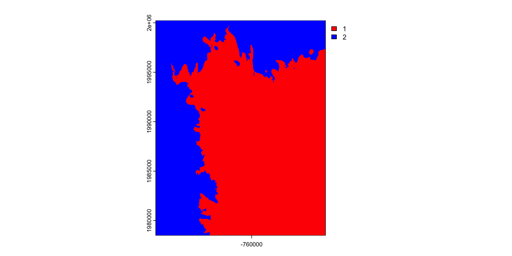
Create a conditional (threshold) mask
r = rast("data/foco-elev.tif")
(m = app(r, threshold))
#> class : SpatRaster
#> dimensions : 725, 572, 1 (nrow, ncol, nlyr)
#> resolution : 30, 30 (x, y)
#> extent : -769695, -752535, 1978485, 2000235 (xmin, xmax, ymin, ymax)
#> coord. ref. : +proj=aea +lat_0=23 +lon_0=-96 +lat_1=29.5 +lat_2=45.5 +x_0=0 +y_0=0 +datum=NAD83 +units=m +no_defs
#> source(s) : memory
#> name : lyr.1
#> min value : 1
#> max value : 1Results

Multiply cell-wise
- algebraic, logical, and functional operations act on a raster cell-wise
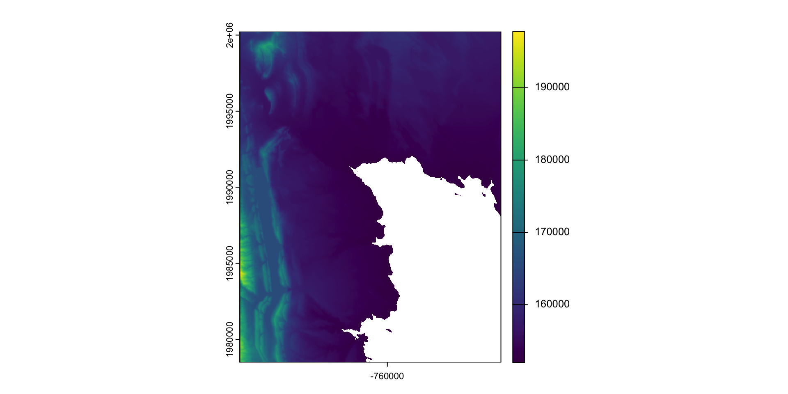
Reclassify
Reclassify is a function that allows you to change the values of a raster based on a set of rules
The rules are defined in a data frame with three columns:
min= the minimum value of the rangemax= the maximum value of the rangelab= the new value to assign to that range
(rc = classify(r, rcl, include.lowest = TRUE))
#> class : SpatRaster
#> dimensions : 725, 572, 1 (nrow, ncol, nlyr)
#> resolution : 30, 30 (x, y)
#> extent : -769695, -752535, 1978485, 2000235 (xmin, xmax, ymin, ymax)
#> coord. ref. : +proj=aea +lat_0=23 +lon_0=-96 +lat_1=29.5 +lat_2=45.5 +x_0=0 +y_0=0 +datum=NAD83 +units=m +no_defs
#> source(s) : memory
#> varname : foco-elev
#> name : dem
#> min value : 0
#> max value : 5(s = c(r, m, elev_cut, rc) |>
setNames(c("DEM", "Mask", "Elevation Band", "Classified")))
#> class : SpatRaster
#> dimensions : 725, 572, 4 (nrow, ncol, nlyr)
#> resolution : 30, 30 (x, y)
#> extent : -769695, -752535, 1978485, 2000235 (xmin, xmax, ymin, ymax)
#> coord. ref. : +proj=aea +lat_0=23 +lon_0=-96 +lat_1=29.5 +lat_2=45.5 +x_0=0 +y_0=0 +datum=NAD83 +units=m +no_defs
#> sources : foco-elev.tif
#> memory
#> memory
#> memory
#> names : DEM, Mask, Elevation Band, Classified
#> min values : 146730, 1, 152001, 0
#> max values : 197781, 1, 197781, 5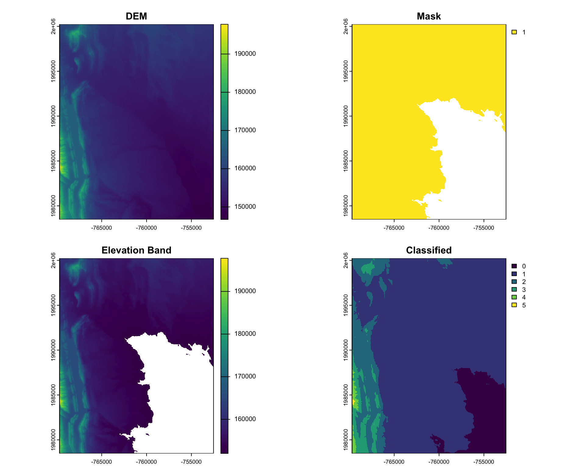
Real Example: Classify Rainfall Regions of Colorado
#remotes::install_github("mikejohnson51/climateR")
library(climateR)
#>
#> Attaching package: 'climateR'
#> The following object is masked from 'package:readr':
#>
#> parse_date
#> The following object is masked from 'package:graphics':
#>
#> plot
#> The following object is masked from 'package:base':
#>
#> plot
AOI = AOI::aoi_get(state = 'CO')
system.time({ prcp = climateR::getTerraClim(AOI,
varname = "ppt",
startDate = "2000-01-01",
endDate = '2005-12-31') })
#> user system elapsed
#> 0.354 0.039 2.605(cl_ppt = classify(mean(prcp$ppt), rcl, include.lowest=TRUE))
#> class : SpatRaster
#> dimensions : 99, 170, 1 (nrow, ncol, nlyr)
#> resolution : 0.04166669, 0.0416667 (x, y)
#> extent : -109.0833, -102, 36.95833, 41.08334 (xmin, xmax, ymin, ymax)
#> coord. ref. : +proj=longlat +ellps=WGS84 +no_defs
#> source(s) : memory
#> name : mean
#> min value : 1
#> max value : 4Plot
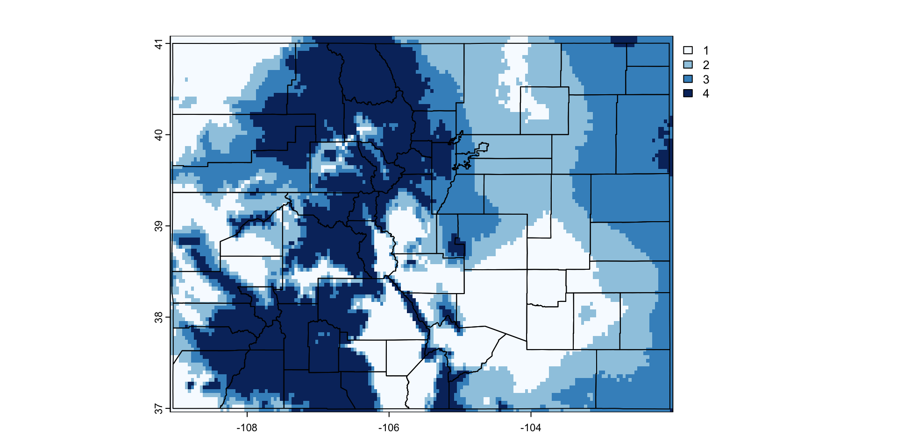
Object/Field Interaction
Often, we want to know the relationship between a raster and a vector object
In these cases, we can use the
extractfunction to get values of a raster at the locations (point or bounds) of a vector objectFor this example, we will use OpenStreetMap data to get the location of rivers in Fort Collins.
Lets find the longest river segment IN our extent
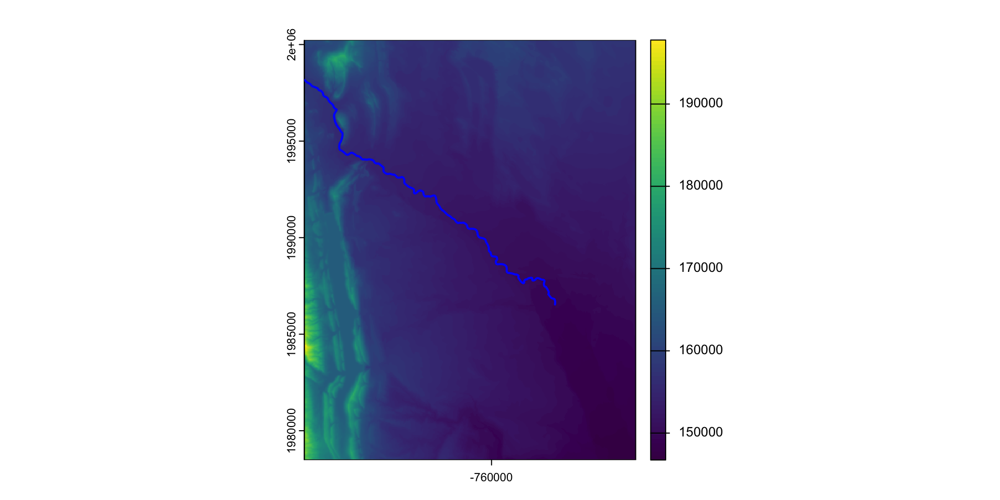
Value Extraction
Often, we want to know the profile and sinousity of a river
To do this, we need to know the inlet and outlet as well as the straight line connector
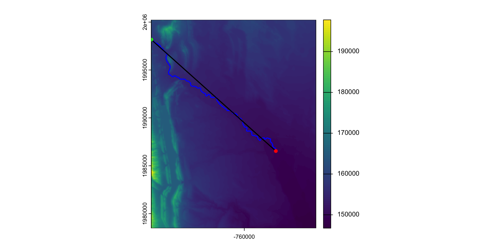
Computation 1: Sinuosity
Channel sinuosity is calculated by dividing the length of the stream channel by the straight line distance between the end points of the selected channel reach.

Computation 1: River Slope
The change in elevation between the inlet/outlet divided by the length (rise/run) give us the slope of the river:
To calculate this, we must extract elevation values at the inlet and outlet:
Computation 3: River Profile
The river profile is the elevation of the river at each point along the river.
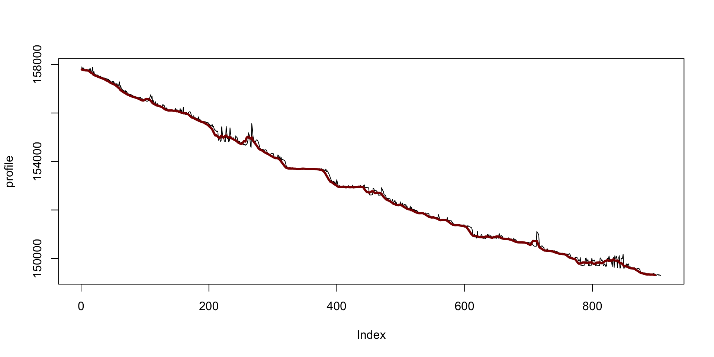
Assignment
This is your final assignment of the semester and is a 2 day assignment.
Define River Object
We we extract a river profile from the Poudre River in Fort Collins, CO.
To do use the code from lecture to extract all
waterwaysfrom OpenStreetMap for the Bounding Box of Fort Collins, CO.Filter the
osm_linesobject to only include theCache la Poudre Riverand merge the lines into a single line object withst_union(). Be sure to convert the object to asfobject withst_as_sf()when done.Use
st_length()to compute the length of the river for future calculations.Use
st_cast()to convert the river object to aPOINTobject and save it aspoudre_ptsfor latter extraction tasks
Define DEM Object
- Use the
rast()function to read in the DEM file from thelynker-spatialS3 bucket shared in last assignment. Be sure to use the vsis3 prefix!
Assignment
Extract River Profile
Use the
extract()function to extract the elevation values from the DEM at the points along the river.Use
bind_cols()to combine the spatial river points with the extracted elevation values.Use
mutate()to add a new column calledIDthat is a sequence from 1 to the number of points in the river (n()).
Compute Sinuosity
Use the
st_distance()function to compute the straight line distance between the first and last points in the river.Divide the length of the full river (step 3) by this straight line distance to get the sinuosity. Report the value and what it means. Does this value make sense with respect to the complete Poudre River?
Compute Slope
- The slope of a river is the change in elevation between the inlet and outlet divided by the length of the river. Compute this value and report it. Remember the units of the elevation (cm) and of your length!
Assignment
Map Profile: 2 ways
Last, we want to visualize the river profile.
Use
ggplot()to create a line plot of the elevation values along the river. Be sure to use theIDcolumn as the x-axis and thedemcolumn as the y-axis. Add nice lables and themese to your chart.Use
ggplot()to plot the spatial mpa of the river profile. Use thegeom_sf()function to plot the river and color it by elevation. Be sure to use a nice color scale and theme.
Convert all of this into a Quarto document and submit a link to the deployed document on GitHub to the Canvas.
Congrats!